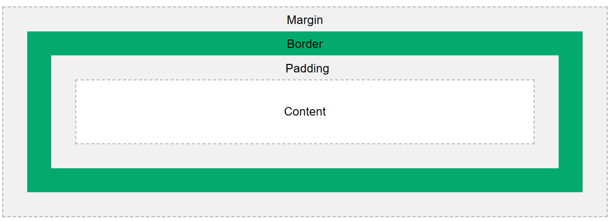

This is an example of the 'box model'

Every HTHL object has a border. You can style this border, and give it margins or padding.
Take another look at the grid on the first page, do you see how margins have created space between each item? How about how the padding has made more space around the text?